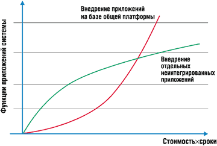
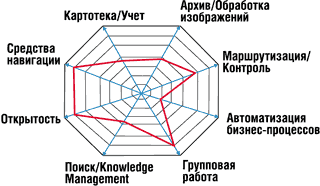

Владимир Андреев,
менеджер по развитию бизнеса Digital Design
Andreev@digdes.com
В последнее время тема автоматизации документооборота как никогда актуальна. Компании, достигшие достаточной степени организационной зрелости и осознания протекающих в них процессов, пытаются использовать средства автоматизации документооборота для дальнейшего улучшения своей деятельности.
И все же, несмотря на огромный интерес к данной теме, предложение рынка существенно отстает от возрастающей потребности. Менеджеры информационных систем сталкиваются с большими проблемами при выборе ПО, способного обеспечить адекватные средства для реализации задач, которые ставят перед ними руководители компаний. Возможно, данная статья несколько упростит решение таких проблем.
Что значит автоматизировать документооборот
Приступая к автоматизации документооборота, надо изначально выделить две разные задачи: собственно внедрение тех или иных приложений, автоматизирующих конкретные процессы обработки документов, и внедрение платформы для подобной автоматизации. Одна из основных причин неуспеха при внедрении систем автоматизации документооборота кроется как раз в смешении этих двух задач.
Вообще говоря, приложений автоматизации документооборота насчитывается множество. Вот несколько примеров выполняемых ими функций:
- регистрация корреспонденции (входящие, исходящие);
- создание электронного архива документов;
- согласование и утверждение ОРД;
- контроль исполнения документов и поручений;
- автоматизация договорного процесса;
- библиотека регламентов управленческих процедур;
- оформление командировок;
- организация внутреннего информационного портала предприятия и его подразделений;
- система контроля знания должностных инструкций.
Очень часто функции обработки документов составляют часть бизнес-процессов, уже автоматизированных с помощью различных программных технологий. Вот несколько примеров подобных задач:
- поддержка формирования документов в бюджетном процессе;
- управление процессом публикаций и наполнения Web-сайта;
- отслеживание процесса обработки накладной за границами системы складского учета;
- архив документов и система контроля и уведомления о своевременности взаимодействий в приложении управления контактами;
- подсистема автоматизации документооборота при управлении проектами;
- подсистема утверждения платежных документов.
В принципе можно внедрять перечисленные приложения по отдельности "с нуля", не вкладывая средства в создание дополнительной инфраструктуры. Однако подобный подход, вполне пригодный при автоматизации традиционных задач, не позволяет достичь основного эффекта от внедрения комплекса приложений автоматизации документооборота в силу специфики данной группы приложений. Рассмотрим подробнее их особенности.
Множество приложений на одном рабочем месте. В обычных приложениях (бухгалтерские программы, системы складского учета и т. п.) пользователь работает с информацией в рамках одного автоматизированного рабочего места, редко выходя за его пределы. Приложения документооборота автоматизируют базовые процессы управления, охватывающие большинство сотрудников. В связи с этим каждому сотруднику приходится использовать на своем рабочем месте весь комплекс приложений и соответственно осваивать интерфейс каждого из них.
Специфичность приложений. В приложениях автоматизации документооборота закрепляются опыт и управленческие ноу-хау компании; соответственно они специфичны для конкретной организации. Опыт показывает, что даже такие типовые процедуры, как согласование договоров, канцелярия, оформление командировочных документов, могут существенно различаться в разных компаниях, пусть и со сходной структурой бизнеса.
Нерегулярное использование приложений. Пользователь взаимодействует с функциями приложений апериодически, по мере необходимости выполнения определенной функции в бизнес-процессе. Он может выполнять какую-то функцию крайне редко: например, участвовать в согласовании текста годового отчета приходится раз в год. Все это требует, во-первых, определенной активности приложения по отношению к пользователю (приложение должно сообщать ему, что и когда он должен сделать); во-вторых, унифицированного интерфейса для различных функций в различных процессах обработки документов.
Необходимость организации общего информационного пространства. Приложения данного класса накапливают информацию об основных аспектах деятельности сотрудников организации. Поэтому необходимо уделять особое внимание общности механизмов поиска, извлечения знаний, накопления статистической информации и анализа процессов. При этом важно иметь доступ к информации об участии сотрудников в различных бизнес-процессах. Наличие подобных интегрированных механизмов позволит получить качественно новую информацию о работе организации.
Необходимость гибких инструментов модификации приложений. Основная задача автоматизации документооборота - распространение автоматизации на формализованную часть управленческого процесса. Но сам процесс формализации является периодическим и итеративным. По мере внедрения определенного процесса выявляются его недостатки и необходимость внесения изменений в его структуру. Таким образом, приложения автоматизации документооборота принципиально не могут быть реализованы в виде жестких автоматизированных рабочих мест; им требуется возможность модификации в процессе их эксплуатации.
Необходимость последовательной автоматизации. Принципиальная невозможность автоматизировать все управленческие процедуры в компании единовременно требует возможности постепенно наращивать ее мощность и поэтапно автоматизировать отдельные контуры документооборота, не изменяя базовую инфраструктуру системы и в особенности клиентские приложения.
Сложность управления комплексом приложений. При последовательном внедрении большого количества приложений, автоматизирующих отдельные задачи обработки документов, не интегрированных в единую систему, их сопровождение существенно усложняется и удорожается. Это в итоге может свести на нет эффект от автоматизации и требует внедрения приложений в рамках единой системы администрирования и сопровождения.
Все перечисленное выше делает невозможным эффективное внедрение различных приложений автоматизации документооборота при отсутствии их тесной интеграции. Именно эту задачу и призвано обеспечить создание комплексной системы автоматизации документооборота. При подобном подходе задача разбивается на два этапа, а именно - внедрение платформы для автоматизации документооборота и реализация на ее базе комплекса интегрированных приложений.
Цели внедрения базовой платформы автоматизации документооборота следующие:
- удешевление разработки и внедрения приложений;
- удобство пользователя и унификация интерфейса всех приложений;
- сокращение стоимости эксплуатации и сопровождения комплекса приложений;
- обеспечение общего информационного пространства, интегрированного поиска и извлечения знаний, накапливаемых в различных приложениях;
- обеспечение унифицированных средств мониторинга процессов и контроля исполнения;
- возможность сбора статистической и аналитической информации о скорости и своевременности исполнения этапов бизнес-процессов.
Целесообразность внедрения платформы автоматизации документооборота иллюстрируется графиком на рис. 1. При реализации набора неинтегрированных приложений первые внедрения обходятся относительно недорого; однако когда приложений становится много, с одной стороны, существенно растет стоимость их сопровождения и обучения персонала, с другой - возникает необходимость в их интеграции (например, для построения отчетов, включающих информацию из множества источников), что приводит к дополнительным издержкам. Помимо этого пользователи по мере развития системы вынуждены пользоваться множеством приложений с разнородным интерфейсом, что снижает эффективность их работы.
|  |
| Рис. 1. Зависимость суммарных издержек на внедрение приложений автоматизации документооборота при использовании различных стратегий.
|
Внедрение единой платформы автоматизации избавляет от всех этих проблем; более того, по мере накопления опыта использования системы все меньше усилий приходится тратить на внедрение очередного приложения и существенно снижаются риски неудачного внедрения. Однако этот подход имеет и свои недостатки, главные из которых - высокая стоимость начальных шагов внедрения и риск, что платформа не оправдает ожиданий от внедрения в краткосрочном периоде.
Из анализа рис. 1 можно сделать следующий вывод: если организации требуется оперативное решение нескольких конкретных задач, таких, как создание архива документов, автоматизация канцелярии, то более рациональным подходом станет покупка или размещение заказа на разработку именно этого набора приложений. В данном случае нет необходимости заботиться о внедрении комплексной системы, что потребовало бы гораздо больше финансовых вложений, времени и усилий персонала.
Таким образом, для внедрения платформы комплексной автоматизации документооборота в компании должны сформироваться следующие предпосылки:
- осознание необходимости решения комплекса задач в области автоматизации документооборота с целью существенного улучшения управляемости;
- наличие воли руководства и понимание длительности и трудоемкости процесса внедрения системы;
- наличие квалифицированных кадров, которые в состоянии координировать последовательную разработку и внедрение приложений на базе платформы.
Критерии выбора платформы
Прежде чем приступить к анализу имеющихся на рынке предложений, сформулируем критерии выбора системы автоматизации документооборота. Это функциональность, учет сложившейся инфраструктуры информационной системы организации и наличие квалифицированного персонала. Рассмотрим перечисленные критерии подробнее.
Функциональность системы
Как показывает опыт, чтобы сравнение различных систем документооборота имело практическую пользу, оно должно включать не одну сотню параметров сравнения, что невозможно уложить в рамки журнальной статьи.
|  |
| Рис. 2. Модель для анализа функциональности систем автоматизации документооборота.
|
Мы рекомендуем при сравнении систем ориентироваться на модель, изображенную на рис. 2. Согласно ей, все функции системы делятся на восемь групп.
Функции навигации и организации доступа к информации обеспечивают удобство доступа пользователей к различным приложениям и включают такие базовые средства, как персональные и групповые очереди заданий на обработку документов, средства навигации по иерархии данных в системе, возможность манипуляции представлениями данных, средства инициализации функций обработки документов и т. п.
Функции учета документов или средства развертывания картотеки обеспечивают фиксацию сопроводительной информации о документах, атрибутов документов и ссылок, ведение справочников, разработку учетных карточек документов, определение бизнес-логики обработки учетных карточек (проверка значения полей, обеспечение уникальности, автоматическая нумерация), определение операций обработки документов, поддержку жизненного цикла обработки документа и т. п.
Функции работы с архивом документов и обработки изображений включают хранение файлов документов, управление блокировками, версиями, оптимизацию стоимости хранения. Сюда также входят функции сканирования и распознавания текстов документов и т. д.
Функции маршрутизации документов и контроля их состояния обеспечивают доставку документов на рабочие места пользователей, позволяют обрабатывать документы в режимах online и offline (с использованием электронной почты), собирать информацию о действиях пользователя и контролировать текущее состояние документов и т. д.
Средства автоматизации бизнес-процессов включают средства их моделирования, средства имитационного моделирования и среду для реализации и мониторинга процессов, а также средства накопления статистики об исполнении процессов и анализа их стоимости и эффективности.
Средства организации групповой работы включают в себя блок функций, связанных с организацией различных телеконференций - offline-форумов, аудио- и видеоконференций, а также средства групповых обсуждений и разработки документов.
Функции поиска и управления знаниями включают полнотекстовый, атрибутивный поиски и поиски по классификаторам, средства организации сложных поисковых запросов, разнообразные технологии интеллектуального поиска, средства каталогизации и классификации документов, создания баз знаний по различным предметным областям и т. п.
Возможности расширения функциональности играют важнейшую роль при выборе системы автоматизации документооборота. При создании приложений не всегда оказывается достаточно стандартных средств их настройки, предоставляемых платформой. Это также приводит к тому, что возникает необходимость использовать программные интерфейсы платформ.
На практике ни одна из систем не реализует полного набора функций. Красная линия на рис. 2 очерчивает подмножество функций, реализованных конкретной системой. Как следствие, разработчикам приложений приходится компенсировать недостатки платформы.
Учет сложившейся инфраструктуры
Данные соображения имеют огромное значение при выборе платформы автоматизации документооборота. Последняя должна интегрироваться со службой каталога и подсистемой безопасности, работать под управлением определенных серверных и клиентских операционных систем.
Очень важно определить, поддерживает ли выбираемая система сервер баз данных и почтовую программу, которые уже используются в организации. Данные компоненты информационной инфраструктуры - это основа комплексной системы автоматизации документооборота.
Если в корпорации используются серверы UNIX, совершенно нелогично будет выглядеть внедрение сервера коллективной работы Microsoft Exchange. С другой стороны, если компания ориентируется в своей работе на ПО Microsoft, например, уже развернула электронную почту на базе Microsoft Exchange, то крайне нерациональным представляется внедрение в компании Lotus Notes, дублирующей многие функции этой системы.
Важно также, насколько базовое клиентское место системы автоматизации документооборота соответствует традициям организации. Если пользователи компании привыкли использовать Microsoft Outlook, то система автоматизации документооборота должна интегрироваться c Microsoft Outlook. Если в компании используется Web-портал, то необходимо оценить возможность интеграции клиентского ПО системы со средствами организации портала.
Наличие квалифицированного персонала
Огромную роль в удачном внедрении системы автоматизации документооборота играет квалификация персонала, а также знание средств, предоставляемых платформой, наличие опыта использования платформы для автоматизации различных задач и опыта эксплуатации. При внедрении системы нужно убедиться, что в компании (либо на рынке труда и предложения услуг консалтинга при разработке ПО) имеется достаточное количество соответствующих специалистов.
Варианты выбора
На российском рынке, в отличие от западного, возможности выбора платформ для реализации рассматриваемой задачи сегодня весьма ограничены. К сожалению, необходимость русификации пользовательского интерфейса, учета морфологии русского языка в подсистемах поиска и относительно низкая покупательная способность отечественных компаний ставят существенный барьер проникновению систем на наш рынок. Так как использовать нерусифицированную систему, не имеющую в России достаточной поддержки, не представляется сколько-нибудь перспективным, то выбор ограничивается системами следующих производителей.
Microsoft
Компания Microsoft в качестве основы комплексной системы автоматизации документооборота предлагает сервер Microsoft Exchange в комплекте с клиентским приложением Microsoft Outlook. Помимо этого, предлагается использовать продукт Microsoft Sharepoint Portal Server в качестве архива документов и средства организации корпоративного интранет/экстранет-портала. Компания также предоставляет полный набор средств для организации online-взаимодействий.
IBM/Lotus
Компания IBM предлагает в качестве базового средства автоматизации документооборота платформу Lotus Notes. Помимо этого можно дополнить базовую функциональность средствами организации архива документов Domino.doc, подсистемой Domino.Workflow и рядом дополнительных средств для организации групповых взаимодействий.
Documentum
Данная компания представлена на рынке одноименным продуктом, представляющим собой средство создания мощного архива документов с возможностью разработки учетных объектов, средствами управления жизненным циклом и автоматизации бизнес-процессов обработки документов.
Hummingbird
Данной компании принадлежит группа продуктов PC DOCS - корпоративный сервер архива документов и Fulcrum - мощная поисковая система.
StaffWare
Компания StaffWare, будучи ведущим производителем систем Workflow, соответственно предлагает строить комплексную систему автоматизации документооборота на базе функций управления бизнес-процессами.
***
Все перечисленные продукты - это открытые системы, представляющие собой именно платформы для разработки приложений. Более того, на базе каждой из них различными компаниями создано достаточное количество приложений, которые можно использовать при внедрении комплексной системы.
Отечественные производители, к сожалению, пока не предлагают равных по мощности систем. Большая часть их продуктов реализует функции автоматизации определенного контура документооборота (например, система "Дело" компании ЭОС предназначена для автоматизации канцелярии и делопроизводства, "Евфрат" от Cognitive Technologies - для создания архива документов и т. д.). Имеется группа продуктов, реализующих набор приложений на базе системы Lotus Notes ("БОСС-Референт", Office Media, "Эскадо" и т. п.).
На роль самостоятельных платформ автоматизации документооборота, на наш взгляд, могут претендовать три отечественных продукта - OPTiMA-WorkFlow компании "Оптима" (http://www.optima.ru), LanDocs компании ЛАНИТ (http://www.lanit.ru) и система DocsVision компании Digital Design (http://www.digdes.ru). Все три продукта ориентированы на работу в инфраструктуре, базирующейся на продуктах компании Microsoft (интегрируются с Microsoft SQL Server и Microsoft Exchange), предназначены для создания на их базе различных приложений и содержат определенные инструменты настройки. Однако в отличие от продуктов западных компаний, предоставляющих возможность доработки третьим фирмам, в данном случае доработку и создание приложений на базе этих платформ пока могут проводить только сами компании - поставщики платформ.
Детальное сравнение перечисленных платформ, к сожалению, невозможно в рамках журнальной публикации. Кратко достоинства и недостатки рассмотренных выше продуктов сведены в таблице.
Основные характеристики систем автоматизации документооборота
| Платформа | Достоинства | Недостатки | Приложения |
| Microsoft Exchange |
Большая инсталляционная база. Одна из оптимальных систем организации электронной почты и средств группового планирования Клиентская программа Outlook - одна из наиболее распространенных почтовых программ, содержит богатые возможности кастомизации и встраивания. Поддерживает концепцию универсального InBox, который может использоваться в качестве универсальной очереди заданий Содержит средства быстрой разработки несложных приложений и инструмент быстрого прототипирования - Microsoft Outlook Forms Designer |
Слабые, несовременные инструменты разработки Ограничения в организации хранилища (неудобство работы с файлами документов, отсутствие блокировок, ограниченные возможности реализации сложных документов и справочников) Не слишком очевидная концепция организации системы автоматизации документооборота у компании Microsoft |
Электронная почта и календарное планирование База данных контактов Архив документов (SharePoint Portal Server) Поставщики приложений ориентированы на интеграцию с системами GroupWare (на рынке есть множество приложений для Lotus Notes и Microsoft Exchange) |
| Lotus Notes |
Поддерживает концепцию универсального InBox, который может использоваться в качестве универсальной очереди заданий Средства быстрой разработки приложений, позволяющие реализовывать средние по сложности решения Предоставляет комплексное решение, содержащее все необходимые и в достаточной степени интегрированные компоненты |
Слабые, несовременные, плохо масштабируемые инструменты разработки Ограничения в организации хранилища (неудобство работы с файлами документов, отсутствие блокировок, ограниченные возможности реализации сложных документов и справочников) Недостатки в реализации программных интерфейсов и объектной модели, ограничивающие возможности кастомизации Нестандартный интерфейс пользователя |
Электронная почта и календарное планирование Архив документов (Domino.doc) Подсистема Workflow (Domino.Workflow) Есть готовые приложения российских производителей Поставщики приложений ориентированы на интеграцию с системами GroupWare (на рынке есть множество приложений для Lotus Notes и Microsoft Exchange) |
| Documentum |
Готовый инструмент для внедрения полнофункционального корпоративного архива документов Есть средства маршрутизации документов Достаточно удобные и масштабируемые средства разработки Есть средства для встраивания функций управления документами в различные приложения |
Требует внедрения дорогостоящей инфраструктуры Отчасти дублирует систему GroupWare, обеспечивая собственную среду навигации |
Архив документов Система управления конструкторскими документами Канцелярия Интеграция с системой управления проектами |
| PC DOCS |
Готовый инструмент для внедрения полнофункционального корпоративного архива документов Есть средства свободной маршрутизации документов |
Требует внедрения дорогостоящей инфраструктуры |
Архив документов Система управления конструкторскими документами (от "Лоция Софт) |
| StaffWare |
Возможность реализации процессного подхода Средства моделирования и контроля исполнения бизнес-процессов Содержит интерактивные инструменты для разработки несложных приложений (электронных форм и процессов) |
Требует внедрения инфраструктуры Ограничения в организации хранилища (неудобство работы с файлами документов, ограниченные возможности реализации сложных бизнес-объектов и справочников) Отчасти дублирует систему GroupWare, обеспечивая собственную реализацию универсальной очереди заданий Низкая активность на российском рынке |
|
| OPTiMA-WorkFlow |
Возможность тесной интеграции в инфраструктуру Microsoft Относительно невысокая стоимость решения Множество сервисных модулей |
Существенные ограничения на доработку решений без участия производителя платформы |
Канцелярия и делопроизводство Архив документов Система автоматизации различных процессов обработки документов |
| LanDocs |
Возможность тесной интеграции в инфраструктуру Microsoft Относительно невысокая стоимость решения |
Существенные ограничения на доработку решений без участия производителя платформы |
Канцелярия и делопроизводство Архив документов Интеграция с системой управления проектами |
| DocsVision |
Возможность тесной интеграции в инфраструктуру Microsoft Современная архитектура (использование платформы .NET) Относительно невысокая стоимость решения |
Существенные ограничения на доработку решений без участия производителя платформы |
Канцелярия и делопроизводство Архив документов Система автоматизации различных процессов обработки документов |
На сегодня нет идеальной базовой платформы для внедрения системы автоматизации документооборота компании. Любое решение потребует дополнительных усилий, направленных не только на разработку комплекта приложений, но и на дополнение базовых инструментов, предоставляемых платформой. Таким образом, менеджерам информационных систем приходится принимать решение о выборе платформы в непростых условиях. Однако уже сегодня можно обеспечить базу для внедрения комплексной системы автоматизации документооборота в организации.